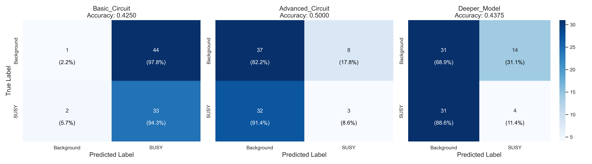

Quantum Machine Learning for SUSY Classification
Analysis of quantum classification performance on the SUSY dataset
Generated on 2025-03-24 20:10:11
Model Performance Comparison
Comparing the performance metrics of different quantum classifier configurations.
| Model | Accuracy | F1 Score | ROC AUC | PR AUC |
|---|---|---|---|---|
| Basic_Circuit | 0.4250 | 0.5893 | 0.7041 | 0.6172 |
| Advanced_Circuit | 0.5000 | 0.1304 | 0.4692 | 0.3933 |
| Deeper_Model | 0.4375 | 0.1509 | 0.4667 | 0.3842 |
ROC Curve Analysis
Receiver Operating Characteristic (ROC) curves showing the tradeoff between true positive rate and false positive rate.
Precision-Recall Analysis
Precision-Recall curves showing the tradeoff between precision and recall at different thresholds.
Confusion Matrices
Visualization of model predictions showing true vs. predicted classifications.

Feature Importance
Relative importance of selected features for classification.
Training History
Loss curves showing the convergence of the quantum models during training.